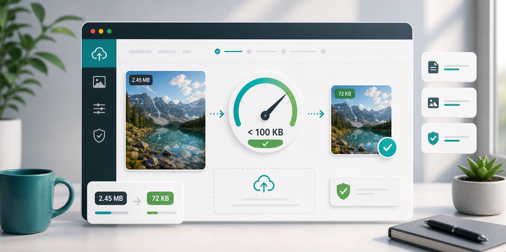

Upload limits
How to compress an image under 100KB.

Many upload forms still ask for images under 100KB. It happens with job applications, school portals, exam forms, profile photos, ID uploads, and some government websites. The frustrating part is that a normal phone photo can be 2MB, 5MB, or even larger. Getting that under 100KB takes more than clicking compress once.
The first step is to understand what the form needs. If it asks for a passport-style photo, the final image probably does not need to be 3000 pixels wide. If it asks for a document scan, text must stay readable. If it asks for a signature, the image can often be much smaller. The right settings depend on the content.
Start by resizing. For a profile or application photo, try 800 to 1000 pixels wide. For a signature, 400 to 700 pixels may be enough. For a document image, be careful: too much resizing can make text unreadable. In many cases, reducing dimensions is the only realistic way to reach 100KB without destroying the image.
Next, use JPG or WebP for the output unless the form specifically requires PNG. JPG is usually accepted by most upload portals and works well for photos. WebP can be smaller, but some older forms may reject it. If the form lists accepted formats, follow that list. A smaller file is not useful if the website refuses the format.
Set quality around 60 to 65 percent as a first attempt. If the file is still above 100KB, lower the width before dropping quality too far. A tiny but clean image is often better than a large image with heavy artifacts. If you need to go below 55 percent quality, inspect the result carefully.
For headshots, check the face, hairline, and background. For documents, zoom enough to read small text. For signatures, make sure the lines are not broken or blurred. Upload portals may also have dimension rules, so watch for messages about both file size and pixel size.
If the file keeps landing just above the limit, make small changes: reduce width by 100 pixels, lower quality by 3 to 5 points, or switch to WebP if allowed. Avoid repeatedly compressing a file that has already been compressed many times. Go back to the original and export a fresh version with better settings.
For scanned documents, try cropping before compression. Empty borders, desk backgrounds, and scanner shadows add pixels that do not help the upload. A clean crop around the actual document can reduce file size and make the image easier to read. If the document is black and white, a lower color range or grayscale export can also help, depending on the tool you use.
For ID photos, avoid starting with a screenshot of the photo if you still have the original. Screenshots often add extra interface pixels or reduce clarity before compression begins. Use the original photo, crop to the required shape, then resize and compress. If the portal gives exact dimensions, follow those dimensions first, then work on file size.
Some websites show a vague error even when the size is correct. In that case, check the extension, dimensions, and file name. Use simple filenames with letters, numbers, and hyphens. Avoid special characters if the upload form is old. A file named profile-photo-100kb.jpg is less likely to cause trouble than a long phone-generated name with spaces and symbols.
CompressPixel can help with this process by letting you choose width, quality, and output format in one place. Use the compress image under 100KB page as your starting point, keep your original image safe, and test the upload immediately after downloading the compressed file. If the image is a normal photo, you may also want the JPG quality guide. Once the portal accepts it and the image still looks clear, you are done.
Sources and further reading
- Google Search Console Core Web Vitals report can help site owners spot pages where heavy assets affect real users.
- Google Image SEO best practices is useful once compressed images are added to public pages.